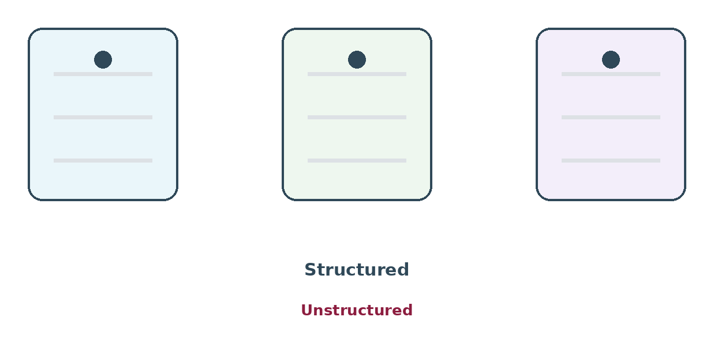

Giving every candidate the same questions and scoring them the same way is the biggest free improvement available in hiring. It is also the change hiring managers resist most — usually on the grounds that it would stop them doing something the evidence says they cannot do.
{kind=link}

What "structured" means
Four things:
- Every candidate for a job gets the same main questions, in the same order.
- You write down in advance what a good answer looks like.
- Each interviewer writes their scores before anyone discusses them.
- The discussion goes through the skills one at a time, not person by person.
That is it. No software required.
What the research says
Studies going back decades find that structured interviews predict how well someone does the job much better than unstructured ones — the free-flowing chat most of us are used to.
The exact size of the difference has been argued over. The older headline numbers turned out to be overstated and have been corrected since. But the direction has never changed. More structure, better predictions.
What a free-flowing chat actually measures
When every candidate gets different questions and there is no scoring system, three things decide the outcome:
- How much you enjoyed the conversation. Which tends to mean how similar the person is to you — background, sense of humour, interests, way of speaking.
- Your first impression. Opinions form in the first few minutes, and the rest of the hour gets spent finding reasons to support them. It feels like gathering evidence. It is actually looking for confirmation.
- How good they are at interviews. Which is a separate skill from the job, very unevenly spread, and strongly affected by whether anyone ever coached them.
None of those is the job. And here is why experience does not fix it: an unstructured interview feels extremely informative while it is happening. The confidence you feel has nothing to do with how accurate you were.
The four parts, and why all four
| Part | What it means | Why it matters |
|---|---|---|
| Same questions | Everyone gets the same main set | Otherwise you are comparing different measurements |
| Written descriptions of each score | What a 1, 2, 3 and 4 look like | Makes two interviewers mean the same thing |
| Scores written before discussion | Everyone submits before the meeting | Stops the loudest voice becoming everyone's opinion |
| Structured discussion | Skill by skill, evidence first | Stops the meeting becoming a vote on impressions |
They build on each other. Same questions without written score descriptions gives you consistent questions scored inconsistently. Score descriptions without writing scores down first gives you a system everyone abandons in the meeting.
The four objections, and honest answers
"It feels robotic and candidates will hate it." Candidates generally say structured processes feel fairer, because they can see what is being judged. What they dislike is a badly run structured interview — someone reading from a script with no follow-up questions. Structure fixes the main questions. It does not stop the conversation.
"I can tell within five minutes." Everyone believes this, the feeling is real, and it is exactly the effect described above. Arguing rarely helps. Suggest a test instead: score independently before the discussion for three jobs, then look at how often the five-minute judgement matched the evidence.
"Our jobs are too varied for standard questions." The questions are standard within one job, not across the company. Two people interviewing for the same job get the same questions. That is the whole requirement.
"We do not have time." Structure moves time from the discussion to the preparation, and reduces the total. Most of the saving comes from meetings that no longer spend forty minutes re-arguing impressions.
You may already have done the work
The scorecard from Module 2 is the structure. If you built it properly — things you could watch someone do, written descriptions of each score, each one assigned to a stage — you have already done most of what this module asks.